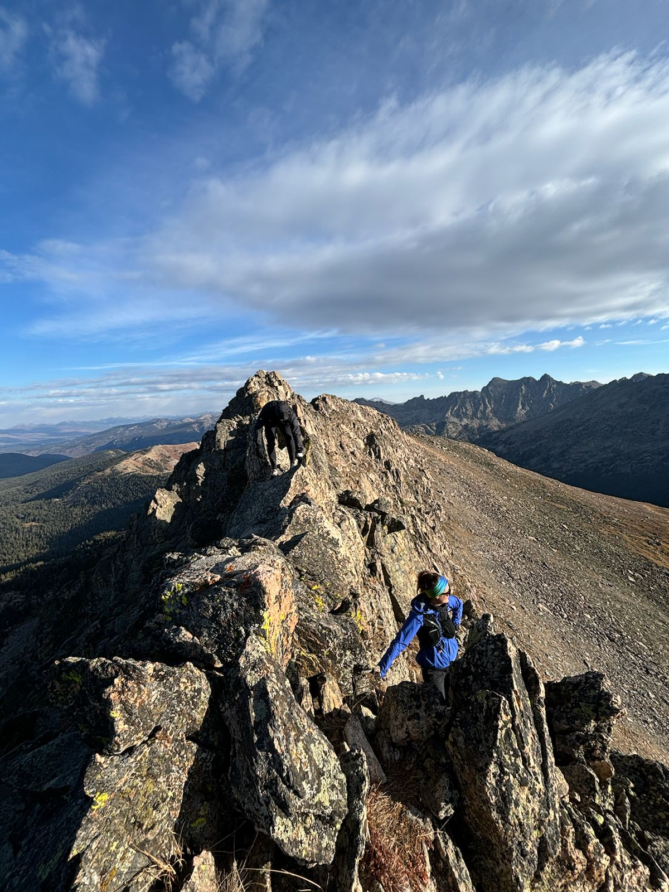

I am currently a AFESP Fellow at the University of Reading at the Department of Meteorology. AFESP (Advancing the Frontiers of Earth System Prediction) is a 15 year research program aimed at advancing Earth system prediction across weather and climate time scales and I will be contributing to this mission by investigating precipitation physics in km-scale models and their impacts on extreme precipitation. I hold a Ph.D. in Atmospheric Sciences and was a ASP Postdoctoral Fellow at the NSF National Center for Atmospheric Research (NCAR) in Boulder, Colorado, where I worked in the section for Weather Extremes Across Scales and did research on the precipitation efficiency of convective storms. My research focuses broadly on precipitation processes, their predictability and their changes with global warming. Understanding how the nature, frequency, and intensity of precipitation evolve in a warming climate is critical for building resilient societies, as these changes directly impact water resources and natural hazards like floods and droughts. Learn more about my specific research interests here.
